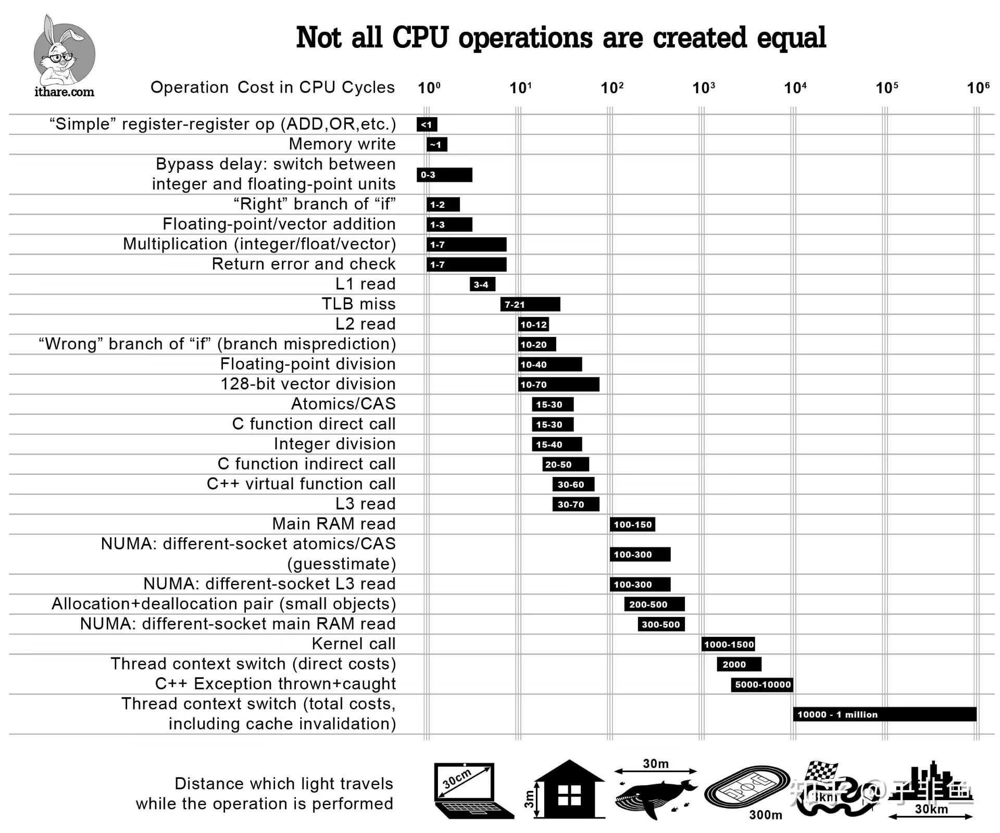

文章 ↵
学习资料总结
这是我以前看过的比较好的文章，总结了一下,希望对于你有所帮助
文章
- What every programmer should know about memory（每一个程序员应该知道的内存知识）
- C++服务编译耗时优化原理及实践
- git merge 和 rebase 的 区别
- for循环的时候要使用auto遍历的原因
- 浮点数误差
- markdown中mermaid的用法
- 提问的艺术
- 什么时候使用const_cast
- 为什么std::vector比std::list快
- 加入const为什么可以优化代码(取模运算)
- 测试oj网站的cpu, 好有趣
- gdb的实现原理
- 看懂火焰图，火焰图基本入门
- 内存模型
- volatile和atomic的区别，以及volatile的应用
- grpc的快速入门
- xmake编译选项
- C++零成本抽象
- 内存分配
- 4字节hash
书籍
- 深入理解操作系统(csapp)：入门书籍，相当于一本目录
- 操作系统导论(ostep)：感觉很不错
- 程序员的自我修养(链接，装载和库)：主要是讲的是ELF相关的
- 计算机网络(自顶向下方法)
- EffectivModernCpp
- 现代cpu性能优化与分析
- Linux多线程服务端编程：使用muduo C++网络库
- STL源码剖析
- Windows核心编程
- 软件调试 第二版
视频
博主
相关网站
- 绘图网站
- 剪切板
- C++
- cppreference: 手册
- cppinsights: 解糖用的e
- stackoverflow 非常牛逼
- 知乎
- IEEE754计算
- Quick-Bench
软件清单
这是我积累的相关软件，Windows上和Linux上的软件我都用，所以都有
Windows
安装scoop
scoop
Set-ExecutionPolicy -ExecutionPolicy RemoteSigned -Scope CurrentUser
Invoke-RestMethod -Uri https://get.scoop.sh | Invoke-Expression
scoop install gcc
scoop install clang clangd
scoop install gdb
scoop install git
- QQ 微信 企业微信 腾讯会议 聊天办公软件
- 网易云音乐
- Office
- Notepad–
- powershell, Windows Terminal 配置环境
- OpenArk 软件测试，逆向等工具集
- VS, Vscode
- Clash
- ugit: 这玩意还是非常好用的
- 彗星助手
- Windbg: 这玩意我感觉巨难用, 但是不得不用(其实还怪好用)
- 微软实用工具索引
- Spxx: 微软调试窗口的工具, 继承在 VS 中
- api-monitor: API 监控工具
- IDA: 看汇编的
Linux
sudo apt install zsh
sh -c "$(curl -fsSL https://gitee.com/Devkings/oh_my_zsh_install/raw/master/install.sh)"
git clone https://github.com/zsh-users/zsh-syntax-highlighting.git ${ZSH_CUSTOM:-~/.oh-my-zsh/custom}/plugins/zsh-syntax-highlighting
git clone https://github.com/zsh-users/zsh-autosuggestions ${ZSH_CUSTOM:-~/.oh-my-zsh/custom}/plugins/zsh-autosuggestions
plugins=(git zsh-syntax-highlighting zsh-autosuggestions sudo)
sudo apt install gcc g++
sudo apt install clang clangd
sudo apt install neofetch
sudo apt install perf
sudo apt install gdb
sudo apt install cmake
sudo apt install valgrind
sudo apt install btop
sudo apt install rigrep
网络问题
- 换一个好一点的梯子，
utools上搜重置网络进行重置-
关闭网络代理，在cmd上直接
ipconfig /flushdns刷新dns缓存，这个很奏效 -
将git从22端口切换到443端口
在~/.ssh/config里面加入下面的话让443代理22端口就行了
Host github.com
Hostname ssh.github.com
Port 443
User git
然后进行验证
ssh -T -p 443 git@ssh.github.com # 这是先用443端口来测试是否连接的通
ssh -T git@github.com # 修改之后，用默认端口是否可以联通过去
踩过的坑
踩过的坑，记下来
统一编码格式
有一次提交的时候，本地好好的，结果交上去，全红了，然后全变绿色的了，但是本地却没有显示出来，导致浪费很多时间，而且我看项目的代码，有gbk，utf-8,utf-8bom，gbk，utf-16各种各样的编码格式。。。所以这里就需要统一一下编码，不管是Windows还是Linux，我都建议使用UTF-8和LF这编码格式，或者说Windows上因为历史遗留问题，全部改成UTF-8Bom编码。
减少宏定义
现在已经是C++23了，C++26也快出来了，但是依旧使用宏定义，我认为宏定义在编程的时候遇到最恶心的点就是：他仅仅是文本替换，你写代码写爽了，使用一个INT来接收一个宏定义，但是当你调试的时候，发现传入的是0，1，2这样的数字，宏定义的相关名称完全没有传入，这就导致你调试的时候很难调试，我希望能够改成enum class这样的类，或者使用using, const等关键字保存对应的消息。
使用包管理器
C++没有官方的包管理支持，确实不好，而且项目中没有包管理，管理器真的不好，在Windows上可以使用vckpg这样的库，Linux上可以使用cmake这样的库,或者使用自带的，比如说pacman or apt这样的自带的包管理器，同事，如果说你使用了某一个库，我建议你先在本地直接编译一遍，否则用别人编译好的，可能会有很大的坑，这时候其实用自己编译过的，是最好的。
X86汇编
这两天在看《老码识途》, 感觉x86汇编比较好玩, 随写一篇文章准备记录一下
寄存器
本质上就是存储数据的地方, 寄存器 - cache - 内存 - 硬盘 - 网络上的介质
不过寄存器存储的确实很少, 32位或者说是64位数，这里主要先考虑32位的
通用寄存器
在32位的寄存器下, 主要是由以下寄存器比较重要
- EAX: 多数情况下是传入参数, 参数的第一个或者说直接是返回值放在EAX上
- ECX: 传入参数
- EDX: 传入参数
- EBX: 传入参数
- EBP: 函数寻址的情况下, EBP是保存栈的base的
- ESP: 维护函数栈的情况下, ESP是栈顶
- ESI
- EDI:
- EIP: PC寄存器, 是保存吓一条寄存器的地址的, 非常重要
其中, EIP这样的寄存器, 保存的是下一条指令的地址, 不过EIP寄存器是线性的, 是线性增长的
- 传入参数按照规定的参数传入方式进行传入，比如说WINAPI的形式，或者说是fastcall的形式，这里比较重要的，因为传入参数的顺序决定了参数在栈里面的分布式怎么分布的，
- C++规定了传入参数遵循WINAPI，fastcall这样的传入方式，但是没有规定怎么使用这个参数，
- 使用参数的顺序式未定义的
如下图：
High
| ... |
+---------+
+24| Arg 1 |
+---------+
+16| Arg 2 |
+---------+
+ 8| Return |
+---------+
EBP+--> |Saved EBP|
+---------+
- 8| Var 1 |
+---------+
ESP+--> | Var 2 |
+---------+
| ... |
Low
- 先按照从右往左压栈传入参数，然后回爆粗你EBP这个指针，然后开始是局部变量，压栈的过程中，ESP这个指针式往下走的，所以可以大致分布是上图
- 因为参数是固定的，那么就可以直接得到指针，然后+8+8这样的得到对应的参数，然后显示出来。
内存地址
下面是相关例子
# ds:[xxx]是段存储，因为内存就是一段一段的，这里直接就是0x12FFC4这个地址的数据， mov 到eax这个寄存器上
# dword是双字，就是从这个0x13FFC4这个地方，四个字节，放到eax上
mov eax, dword ptr ds:[0x13FFC4]
# 同理，eax的数值存储到ds[0X13FFC4]上
// eax的数值往eax上写入数据，同样，dword是双字，也就是四字节
mov dword ptr ds:[0X13FFC4], eax
- 程序中的内存地址很多都是按照基地址 + 偏移量存储的，比如说全局变量，数组，switch这样的关键字，都是base + offset这样存储的
- Windows上按照0x40000这样base地址，但是offset不会变，base地址可能会发生偏移，但是大差不差
经典图片
性能开销

Ended: 文章
其他 ↵
面试相关
- 记录一下秋招到现在的面试经历，自己再复盘一下
- 真的感谢我的第一位导师，如果没有那一段实习和那本Windows核心编程，我感觉我没有这么多面试机会，真的感谢
- 本来想先隐藏的，觉得还是不隐藏了，如果你看到了，说明你我有缘
面试总结
- 计算机面试，菜是原罪，提高自己的技术吧。
- 计算机面试的面试官面试的时候其实找以后一起工作的同事，可能不仅要求技术是比较好的，并且语言表达上要表达清楚，因为以后工作要相互沟通，所以表达能力也要好
- 没到发offer之前，一切都是变数，不看好的可能真的有机会过，但是好的也有可能直接寄。沉住气
面试经历
小黑盒
好像是干flutter的，面完二面之后，就没消息了。。。
- 2023.8.12 19:00 - 20:00 一面
- 写了三道题，都A出来了，然后问了一个计算机网络八股，网址输入到浏览器中都有什么过程
- 8.15 19:00 - 20:00 二面
- 感觉PC客户端和移动客户端有不同，导致面试官只提问了通用性八股
- QT渲染机制，完全不懂，
- 编译/链接的过程，为什么C/C++将.h和.cpp分开？ -> (历史遗留问题)
- 全是计算机网络的问题，好多记不清楚了，还得复习
- 感觉PC客户端和移动客户端有不同，导致面试官只提问了通用性八股
美团
投递的是移动端，但是美团的安全软件捞我的，二面之后第二个就挂了，答的确实不好
- 2024.8.20 14:00 - 15:00 一面
- 内联函数，inline函数
- 宏定义相关
- 个人非常讨厌宏定义，Windows上的有很多宏定义相关的，比如说消息机制，宏定义又有一个非常大的缺点就是他仅仅在预处理的时候进行文本替换，导致根本无法调试，调试的时候直接变成对应的字符串和数字了，非常恶心
- 如何在不侵入程序的情况下进行代码调试
- 事后想了想，好像是静态调试和动态调试的区别？
- 静态调试和动态调试的区别？
- inline关键字的用处？
- 允许在多个编译单元中重复定义，多用于header-only的头文件
- 并且可以在类里面修饰static关键字修饰的变量，可以直接赋值
- 依旧有如何保证C/C++内存泄露的相关问题，如果这个exe程序在用户的手中，如何检测这个内存泄漏的情况？
- 这个确实不懂，问群友，好像是可以直接有监控程序什么的
- 2024.8.27 19:00 - 20:00 二面
- 有一些Bug,这些Bug没有具体的表现出来，比如说没有Crash的Dump文件，但是就有小毛病，比如说内存增长了，但是不至于崩溃，或者说没有统一解决方案的Bug，你会怎么做？ 【就像黑神话悟空的空气墙一样，怎么解决？】
- 确实不会，我觉得可以看ETL那样的文件，或者看相关日志等情况，面试官感觉不是很满意
- malloc这些内存分配，如何检测内存释放的问题？
- 答得时候感觉感觉答的不是很好，之后总结到：
- 对于像new这样的关键字，可以重载placment new,然后当分配内存的时候，可以记录一个链表，在链表中标记一下，当析构之后的时候，从链表中取出来，然后程序运行之后，再检查一下链表，看有没有拿一些块没有清理干净，就能看报错了
- 从知乎上学来的，链接：检测内存泄露，我在面试之前就看了这个，结果没有说，呜呜呜
- 对于malloc这样的函数，可以直接使用Hook函数，将其Hook，在函数代码执行之前，跟上面一样，记录一下，估计就行了
- QT connect函数又几个参数 -> 其实有第五个参数的，
- 有一些Bug,这些Bug没有具体的表现出来，比如说没有Crash的Dump文件，但是就有小毛病，比如说内存增长了，但是不至于崩溃，或者说没有统一解决方案的Bug，你会怎么做？ 【就像黑神话悟空的空气墙一样，怎么解决？】
网易互娱
好像是实习转正，Windows SDK开发方向的，一面两个面试官，二面三个面试官，汗流浃背了。。
- 2024.8.29 15:00 - 16:00 一面
- new和malloc这样的函数，如果内存申请失败了，返回什么
- C++中才有异常，所以new是std::bad_alloc, malloc是 NULL
- 虚函数的相关知识，虚表的实现等
- 虚表指针有偏移的问题，因为跨DLL的时候可能不知道你这个表的结构发生改变，那么就有可能出现虚表指针偏移的问题
- 我提出将其全部重新编译一遍，或者说将其虚函数加入到虚表之后
- 更好的解决方法是加入到函数末尾，因为更新的时候，可能只会更新一个DLL，其他DLL不知道这个结构发生改变
- 虚表指针有偏移的问题，因为跨DLL的时候可能不知道你这个表的结构发生改变，那么就有可能出现虚表指针偏移的问题
- 内存泄露有什么好的解决方法，在Windows上内存泄露怎么解决？
- WinDbg等调试信息，如果没有调试模块的相关信息，怎么进行调试？完全不会
- VS编译的时候，MT和MD的区别？（面试官说你VS用的熟不熟，嘴瓢说个我都会。。。所以提了这个问题，幸好答出来了）
- 可能又内存释放的问题，内存释放点的问题导致的Crash问题
- Windows和Linux上都有这个问题，std::shared_ptr可以解决这个问题，但是非POD类型，就还是解决不了
- 可能又内存释放的问题，内存释放点的问题导致的Crash问题
- 如何生成Dump文件？又提出多个模块覆盖了Dump文件生成的handler的时候，如何避免这个问题
- 我之前写的一篇博客：Dump文件的生成
- 后面的问题不懂
- UI界面为什么要在一个线程上画（一般是主线程上画）？ -> 好像是保持同步，大致是这样
- 线程同步怎么做？
- 相关锁，原子变量等
- new和malloc这样的函数，如果内存申请失败了，返回什么
- 2024.8.23 17:00 - 18:00 二面
- 登陆器的相关东西，你如何保证数据的安全，然后怎么保证成功登录
- 可以采用https这个协议，（提示之后才知道，确实，这就是https的用处）
- 内存屏障你了解么。寄，感觉完全没用，只了解一点，但是面试的时候直接说，不会，掌握确实不好
- 登陆器的相关东西，你如何保证数据的安全，然后怎么保证成功登录
- DLL加载失败有哪些?
- 目录，环境变量搜索不到的情况下，可能会加载失败
- 32位和64位进程的DLL不能公用（面试完我就想到了。。哎）
- Rpc传输的时候，为什么需要序列化和反序列化一下，不能直接read和write那样传输一个字节流么。
- 因为传输可能这个结构不一样，导致错误，比如说平台架构的问题，最显眼的比如说long在Windows上是四个字节，在Linux上是8个字节。导致这个数据不统一。还有其他的ABI不统一导致的，或者说比如说内存对齐也有可能不统一导致的等等等，反正是必须序列化。
- 你觉得你如何设计一个线程池？考虑的点有哪一些？
- 接口，线程的数量等
- DLL注入有哪几种方法
- 2024.8.27 Hr面
腾讯音乐
- 2024.8.21 19:00 - 20:00 一面
- 实习相关
- CE这样的软件如何锁定一个数值的?
- 扫描内存，然后看拿一些数值有变化，但是直接锁定一个数值不变，不会
- 编译相关，函数压栈的过程有哪一些？C/C++的内存区域都有拿一些，特定是什么？
- 如何不使用锁的情况下保证这个数据安全？互斥锁和自旋锁的区别？什么时候用自旋锁好一些呢？
- 一般操作系统使用互斥锁的时候，都会自旋一下，先看能不能拿到锁，如果拿不到，那么就再进入内核态
- 擦，我忘了无锁实现数据安全了，面完就想到了，（
- 两道LeetCode算法题
- 2024.8.27 二面
- 计算机网络相关
- 中序遍历如何使用BFS的形式遍历出来，不会。。。
- 二面居然过了，hr面。。不过得等到9月底才出结果，但是感觉有点悬
快手
- 2024.8.22 19:00 - 29:00 一面
- 线程安全的问题，如何保证线程安全，如何避免死锁
- 设计模式，考察软件工程设计的要领
- TCP和UDP，视频传输的时候一般用的是什么协议
- 其实现在两者都比较模糊了，好多都是基于UDP，然后魔改的，比如说KCP
- 一道算法题
- 2024.8.29 13:00 - 14:00 二面 寄了
- 线程轮流打印A,B,C 然后打印10次，哎，完全不会，线程的API我都忘了，其实就是一个cv搞一下，然后我不会，
- 基础知识，面试官说我基础知识掌握挺好
- 估计嫌我没iOS方向的知识，于是寄了。呜呜呜
海康
好怪，整个就只有一面。。hr面之后拒了
- 2024.9.4 海康 C/C++ 一面
- 实习相关
- 2024.9.5 hr面
腾讯
TX，你居然约我了，呜呜呜，
- 2024.9.10 20:00 - 21:00 一面 实际面了有一个半小时
- C/C++基础知识，虚函数表相关的，虚函数指针偏移的问题（如何解决），sizeof相关，strcpy后面的\0问题等等等
- Windows上DLL相关的形式，DLL使用的使用的时候应该注意到什么，内存申请和释放相关的
- Dbg的相关原理，怎么实现的，WinDbg上调试的相关命令，然后相关命令，bp,bu,kP，.excr. 等等命令
- STDCALL是什么，有什么区别，然后要注意什么
- Windows上相关注入有什么？DLL线程注入，钩子函数，输入法注入相关的
- 工作相关的，如何用什么解决的，怎么解决，如何解决？
- 算法题，不会写，思密达。就记这些了。。。
- 2024.9.19 20:00 - 21:00 二面 实际约面了两个半小时，而且和一面一个面试官。。
- 重名DLL如何进行加载？重名DLL加载失败的情况是什么？
- DLL加载失败的原因有哪一些？
- 三维空间上很多点，你怎么判断点在线上，如何进行优化
- 考了了一段汇编题，这段汇编是干啥的，其中的几个指令是什么用途。。CALL和RET这些，麻了
- API Hook(api-monitor的相关知识)的相关知识。DLL加载的相关知识，隐式加载和显示加载的相关知识，在操作系统中都做了什么
- 5升和6升的水如何倒出三升水
- 两道编程题，一个树，一个解析模拟题
- 还有其他的，不是很清楚了
上海瓶钵
这就是Linux开发么，哎，好难 -> 没消息， 挂了，不过学到了很多
- 2024.8.23 一面
- GDB调试中watch的原理
- GDB 调试的时候，如何打断点，代码中如何多次命中？【就是比如说一个断点放在for循环里面，如何每次循环的时候都会直接命中】
- 设置断点之后，使用ptrace可以执行单步指令（ptrace single step），然后执行之后，再将0xcc放到原来的位置上。
- 如果说多线程修改一个单一字节的数值（好像就是在汇编层面修改单一），是否是线程安全的？
- 我只回答了可能数据需要读出来，然后修改，然后放回去，然后还有一系列CPU的优化。重新排序等等优化，然后可能就不是线程安全的了。
- 页表中如何实现内存的读，写等 （大致是那个标志位的东西）
- 虚拟机/虚拟化的实现原理，-> 不会，但是感觉跟操作系统和应用程序一样，提供了一个虚拟化的东西
- 如何进行系统调用的？
- syscall指令，先将系统调用的编号（也就是一个数字）放到%eax这个寄存器上，然后syscall执行这个编号所对应的系统调用指令，然后结果好像也是放在%eax上。其他参数可能放再ecx中等其他寄存器
MiniMax
一面之后就没消息了。呜呜
- 2024.8.26 一面 小姐姐很好看（
- 进程/线程的区别，
- 为什么使用单例模式?
某宇宙厂
- 2024.8.14 19:00 - 20:00 一面
- 聊的很多，八股一大堆，COM编程，static 关键字等
- 有一定印象的的是异常处理调用链，然后我现在也不知道是什么，可能是抛异常的时候要走什么,IDT相关？
- 2024.8.19 19:00 - 20:00 二面
- 先问我实习中都干了什么，面试官直接怼脸：你做的有什么难的？很简单啊，我不好评价，宇宙厂面试官谜之自信
- 这场问了我很多项目中的事情，很多地方没有打出来
- PostMessage和SendMessage的区别？
- 我提了一嘴可能会有声明周期带来的引发问题，因为SendMessage是堵塞的，那么如果说你传入一个对象，那么这个对象估计不会随着右花括号析构，但是PostMessage不会堵塞，那么这个对象就有可能出现析构的现象，导致Crash等问题，但是面试官好像并没有领会到。。。哎
- Windows上的：进程/线程/窗口/消息机制/时间循环的关系
滴滴
一天就面了三面，效率确实高，但是不知道过没过
- 2024.9.24 14:00 开始
- 计算机网络相关，rpc为什么不能直接传输，而应该进行序列化
- Windows上的GetMessage不是堵塞的么，为什么最后有一个事件循环，但是这里并不会发生卡顿？就是如果没有消息了，为什么还是好的？
- 这个确实把我难到了
- 学习相关的，如何进行学习？如何学习新知识
- 其他不记得了
微派
- 为什么在网址上输入http的时候，有的会弹出不安全的证书，但是有的却直接给你调到https上了？
- 可能是因为http的那边有跳转？
客户端圣经
本人是客户端从业者，以下是我在网络上搜集到的相关”圣经”，仅仅是自嘲罢了，切勿当真
- 傻逼后端，写一堆黑框框啥也不知道，客户端所见即所得，很有成就感。
- 后端天天面对他那破服务器瞎搞，而我们客户端，是离用户最近的岗位。
- 我认为客户端才是真正在开发产品，后端就只是个管数据的。
- 有后选后, 无后选前, 无后无前, 算法也甜，条件允许, 无脑后端, 前途无量, 预定高管, 其次前端, 需求频繁, 温饱有余, 人上人难, 算法数据, 收入可观, 最好硕博, 高端饭碗, 测试开发, 也可一战, 随手一点, 月入过万, 走投无路, 回家种田, 日出日落, 生活美满, 鬼迷心窍, 来客户端, 表面繁荣, 实则内卷, 工作清闲, 面试火箭, 不到三年, 全部玩完, 65在后, 绿帽在前，苦口婆心，金玉良言，奉劝诸位，擦亮双眼，有则改之，无则加勉。
- 你的客户端, 我的客户端, 好像不一样, PC客户端人下人, 游戏客户端人上人。
- 如果你是个客户端，我不会说什么, 我也不会讨厌你, 更多的是同情, 因为我也是客户端。但如果你是写 flutter 的客户端, 我会唾弃你, 厌恶你，因为你的手上沾满了客户端同胞的血，你同时干三个端就说明有另两个客户端因你而失业流落街头。
网站构建
本网站使用mkdocs进行构建，网上有很多资料可以借鉴，这里记录一下自动推送如何实现
所有的资源文件都在此github链接仓库的main分支上，然后bot将生成的文件推送到gh-pages这个分支上，然后github page选择gh-pages这个分支进行网页展示。
如何推送
github支持自动流水线，也就是action，可以查看此链接中的gh-deploy.yml进行书写，然后进行推送，同时，也应该将github page的配置选择gh-pages这个分支，否则上传不上去，
域名
网上也有，在docs/下创建CMAKE，然后在域名网站上配置指向的ip地址即可